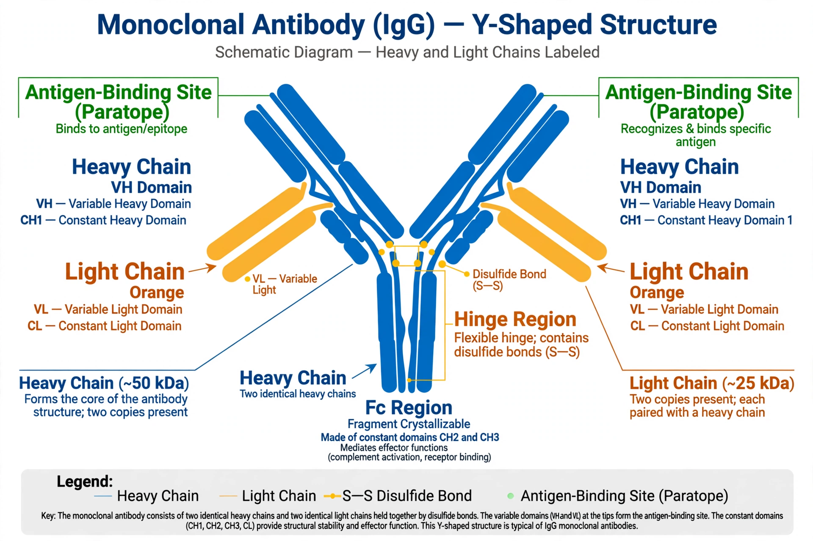

Monoclonal antibodies (mAbs) are antibodies produced by a single clone of B cells, engineered to bind a specific antigen. Since the first therapeutic approval (muromonab-CD3 in 1986), monoclonal antibodies have become one of the largest classes of biologic medicines, used in oncology, autoimmune disease, infectious disease, ophthalmology and migraine prevention. Therapeutic antibody names follow a nomenclature scheme: a prefix, a substem indicating the target or disease, a substem indicating the source (e.g. -o- mouse, -xi- chimeric, -zu- humanised, -u- fully human), and the suffix -mab.
| Name | Target | Type | Principal uses |
|---|---|---|---|
| Adalimumab (Humira) | TNF-alpha | Human | Rheumatoid arthritis, Crohn's disease, psoriasis |
| Rituximab (Rituxan) | CD20 | Chimeric | Non-Hodgkin lymphoma, rheumatoid arthritis |
| Trastuzumab (Herceptin) | HER2 | Humanised | HER2-positive breast and gastric cancer |
| Bevacizumab (Avastin) | VEGF-A | Humanised | Colorectal, lung and other cancers |
| Infliximab (Remicade) | TNF-alpha | Chimeric | Crohn's disease, ulcerative colitis, arthritis |
| Pembrolizumab (Keytruda) | PD-1 | Humanised | Melanoma, lung cancer and other tumours |
| Nivolumab (Opdivo) | PD-1 | Human | Melanoma, lung, renal cancers |
| Cetuximab (Erbitux) | EGFR | Chimeric | Colorectal and head-and-neck cancer |
| Omalizumab (Xolair) | IgE | Humanised | Allergic asthma, chronic urticaria |
| Denosumab (Prolia/Xgeva) | RANKL | Human | Osteoporosis, bone metastases |
| Ustekinumab (Stelara) | IL-12/IL-23 | Human | Psoriasis, Crohn's disease |
| Eculizumab (Soliris) | Complement C5 | Humanised | Paroxysmal nocturnal haemoglobinuria |
| Ranibizumab (Lucentis) | VEGF-A (Fab fragment) | Humanised | Wet age-related macular degeneration |
| Palivizumab (Synagis) | RSV F protein | Humanised | RSV prophylaxis in infants |
| Erenumab (Aimovig) | CGRP receptor | Human | Migraine prevention |
The naming scheme for monoclonal antibodies is governed by the International Nonproprietary Names (INN) programme of the World Health Organization. The substem for the source of the antibody was revised in 2017 and again in 2021, when new suffixes such as -tug, -bart, -ment and -lerg were introduced for newer antibody formats.